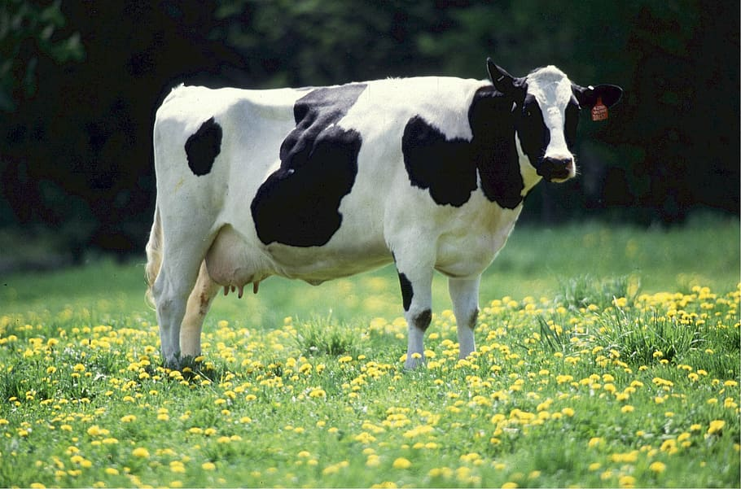

Cow
Domestic cows are one of the most common farm animals around the world, and the English language has several words to describe these animals at various ages. A baby cow is called a calf. A female calf is sometimes called a heifer calf and a male a bull calf. A heifer is a female that has not had any offspring. The term usually refers to immature females; after giving birth to her first calf, however, a heifer becomes a cow. An adult male is known as a bull. Many male cattle are castrated to reduce their aggressive tendencies and make them more tractable. Young neutered males, which are primarily raised for beef, are called steers or bullocks, whereas adult neutered males, which are usually used for draft purposes, are known as oxen.